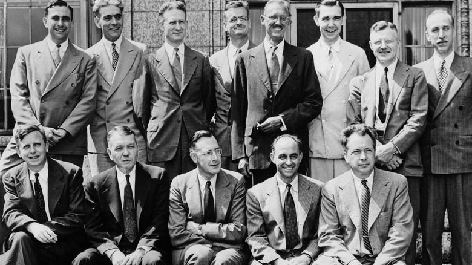
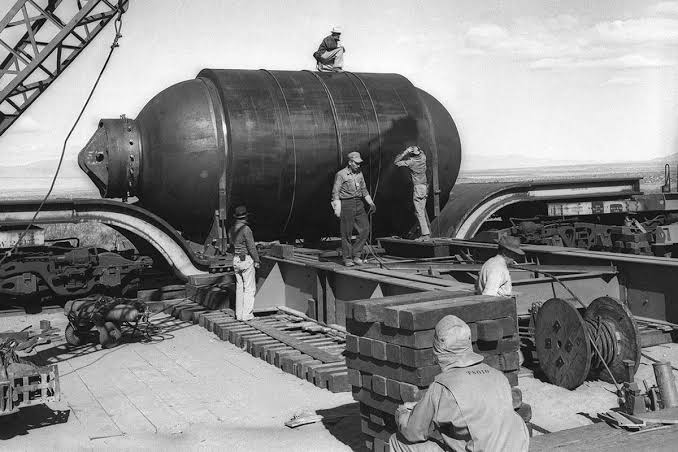
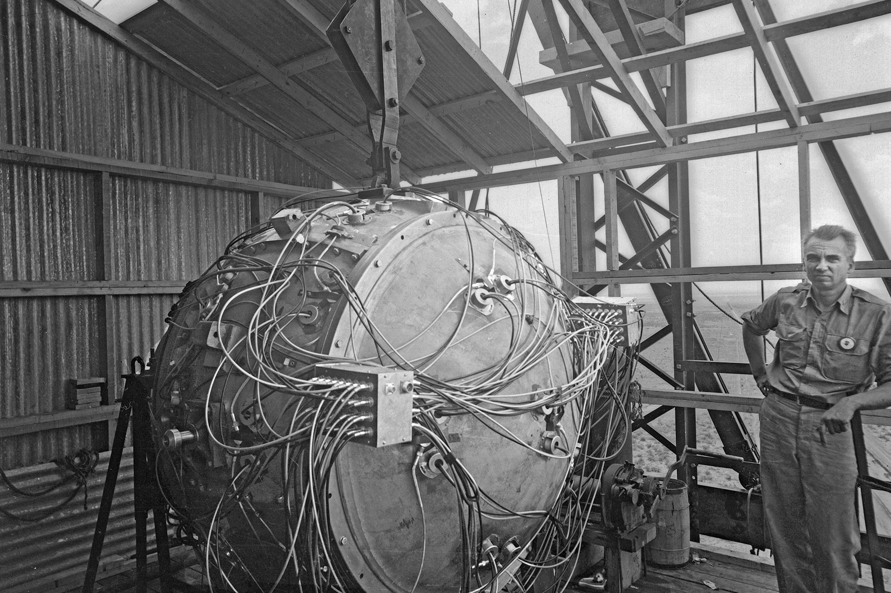

The Manhattan Project: Wartime Atomic Research and Strategic Impact
Launched in 1942 as a top-secret Allied research and industrial program during World War II, the Manhattan Project brought together scientists, engineers, military leaders, and sprawling industrial facilities to develop the first atomic weapons.
Scientific Foundations and Early Wartime Mobilization

Breakthroughs in nuclear physics during the 1930s—including the discovery of nuclear fission in late 1938—showed that splitting heavy atomic nuclei could release substantial energy and potentially sustain a chain reaction.
Worries that Nazi Germany might pursue atomic weapons led scientists such as Leo Szilard and Albert Einstein to warn President Franklin D. Roosevelt in 1939, encouraging early government backing for uranium research.
After the United States entered World War II in December 1941, oversight of the expanding effort shifted to the U.S. Army Corps of Engineers, with Brigadier General Leslie R. Groves named military director in September 1942 and physicist J. Robert Oppenheimer chosen to lead the weapons laboratory at Los Alamos.
Unlike standard weapons programs that improved proven designs, planners had to pursue parallel scientific and engineering paths at once without knowing ahead of time which enrichment or production method would scale reliably.
Secret Sites, Industrial Scale, and the Trinity Test

To protect secrecy and meet massive power, water, and security needs, the project built specialized facilities across the United States alongside cooperation with British and Canadian researchers.
At Oak Ridge, Tennessee, large plants worked to separate fissile uranium-235 from more common uranium-238 using gaseous diffusion, electromagnetic separation, and thermal diffusion, drawing vast amounts of electricity.
At Hanford, Washington, along the Columbia River, reactors irradiated uranium to produce plutonium-239, paired with chemical separation buildings designed to handle radioactive material safely.
At Los Alamos, New Mexico, scientists, mathematicians, and technicians focused on weapon physics, metallurgy, implosion lenses, and detonation systems under strict security and demanding remote conditions.
On July 16, 1945, the project carried out the Trinity test in the New Mexico desert, detonating the first nuclear device and verifying a plutonium implosion design.
Ending the War and Postwar Consequences

In August 1945, atomic bombs were dropped on Hiroshima on August 6 and Nagasaki on August 9, causing immense destruction and loss of life as Japan moved toward surrender and World War II ended.
Even before fighting stopped, scientists and leaders debated the moral, diplomatic, and security stakes of atomic weapons, including postwar arms control and international oversight.
Coordination across academic labs, chemical engineers, contractors, and safety teams left a lasting legacy in science policy, nuclear technology, and global security.
In the decades that followed, the Manhattan Project reshaped international relations, influenced nuclear energy and medical research, and permanently altered global defense doctrine.
Secrecy shaped every stage of the project from hiring and procurement to transport and daily routines. Many workers knew only their own narrow task or building assignment, while mail censorship, security badges, and restricted travel zones helped keep the overarching objective concealed until August 1945.
Choosing among competing isotope-enrichment and production methods required heavy upfront investment in parallel facilities. Engineers had to design pumps, valves, barriers, and control systems capable of handling corrosive fluorides, intense heat, and high radiation without breaking down under continuous wartime operation.
The Manhattan Engineer District also relied on global supply chains and allied cooperation. Raw uranium ore came from sources including the Belgian Congo, Canada, and domestic mines, while British and Canadian scientists contributed directly to theoretical studies, heavy-water work, and weapons engineering.
At Los Alamos, daily life combined intense technical problem-solving with isolation, altitude, housing shortages, and strict security rules. Researchers from diverse backgrounds worked side by side to solve hydrodynamic, metallurgical, and electronic timing problems needed to assemble a working weapon.
Preparations for air delivery involved specialized aircraft modifications and crew training in Utah and on Tinian in the Mariana Islands. Crews practiced approach profiles, release procedures, and safety checks so bomber formations could carry out their missions with precision.
Inside the scientific community, reactions to the use of atomic weapons varied widely. Some researchers viewed the bombings as a decisive shock that hastened the end of the war and avoided a costly invasion of the Japanese home islands, while others expressed deep concern over civilian casualties and the dawn of the nuclear age.
Postwar debates quickly turned toward managing atomic energy and preventing an unchecked arms race. Proposals such as the Acheson-Lilienthal report and the Baruch Plan wrestled with inspection, control, and sovereignty during early Cold War tensions.
Over time, the technical infrastructure and research practices built during the Manhattan Project influenced national laboratories, reactor development, radioisotope applications in medicine and industry, and ongoing global efforts to limit nuclear proliferation.
Selecting the right technical approaches required major investments before full-scale production even began. Planners funded multiple enrichment and production methods in parallel so that setbacks or bottlenecks in one process would not stall the overall schedule during wartime conditions.
Construction and operations at Oak Ridge and Hanford brought tens of thousands of workers into newly built or rapidly expanded communities. Housing shortages, muddy roads, makeshift schools, and crowded mess halls were common alongside high-precision industrial plants and round-the-clock shift work.
Chemical processing and radiation protection posed specialized engineering problems from the start. Separating plutonium from irradiated uranium fuel and handling active isotopes required remote shielding, careful airflow and waste management, and strict monitoring of instruments and personnel.
At Los Alamos, scientists and technicians worked through challenging problems in neutron physics, high explosives, metallurgy, and shock-wave behavior. Testing components in remote canyons and desert sites allowed teams to gather empirical data before assembling complete test devices.
Logistics and transport connected dispersed laboratories, factories, and ports across the country. Specialized containers, courier routes, and priority rail and air shipments moved raw materials, precision parts, and technical reports between sites without drawing public attention.
Weather forecasting and mission planning played a major role in the final air operations in August 1945. Bomber crews and planners monitored cloud cover, wind conditions, and target visibility across Japan before executing the missions that preceded the end of the war.
In the postwar era, the project's scale and scientific achievements reshaped how governments funded large-scale research. National laboratories, university partnerships, and complex engineering management became familiar features of modern science and defense planning.
Studying the Manhattan Project helps explain how wartime urgency accelerated atomic science and why nuclear weapons immediately became a central concern of international diplomacy, ethics, and global security.
Training programs and safety procedures evolved alongside construction and testing as teams worked with specialized equipment, hazardous chemicals, and unfamiliar radioactive materials across multiple sites.
Coordination between military leadership, civilian scientists, and industrial contractors helped keep complex schedules moving, even when technical hurdles required redesigns or unexpected delays.
When the war ended in August 1945, the sudden arrival of atomic weapons forced governments and societies around the world to confront new strategic realities and long-term questions about global security.
International scientific exchange before and during the war also shaped how researchers approached nuclear physics, as émigré scholars, British collaborators, and American teams pooled ideas across institutions.
Even after the fighting ended, governments continued debating how to balance secrecy, open science, and international verification as nuclear technology spread beyond its wartime origins.
Precision instruments, specialized alloys, and strict quality checks underpinned every phase of the program, turning theoretical physics into working industrial systems under intense wartime deadlines.
Precision instruments, specialized alloys, and strict quality checks underpinned every phase of the program, turning theoretical physics into working industrial systems under intense wartime deadlines across remote research and production sites.